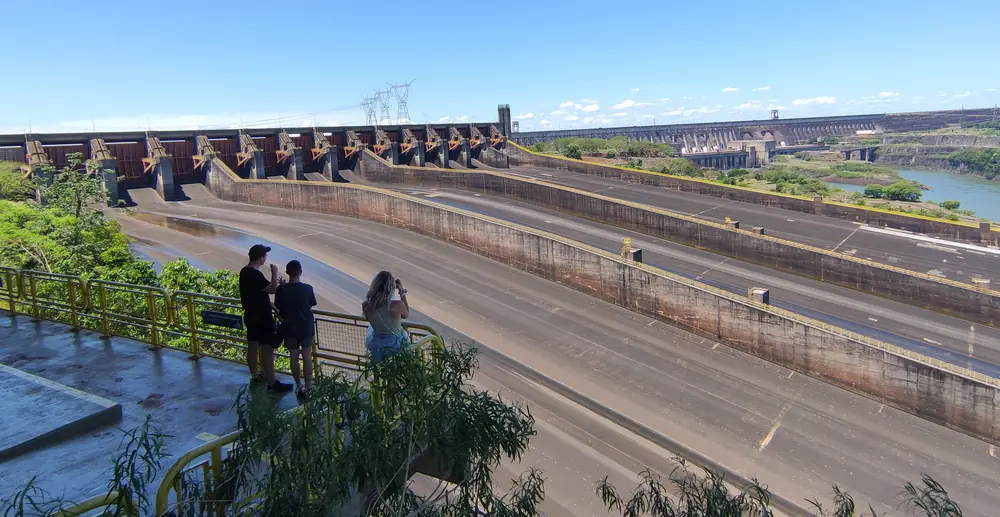

Soy ingeniero de la energía. Desde septiembre de 2024 trabajo como Optimization Engineer en BeeBryte, empresa especializada en optimización energética. Me encargo del sector de Singapur, trabajando en la optimización de sistemas de energía para clientes industriales y comerciales.
Aquí puedes ver algunos de mis proyectos o conocer mi trayectoria.
Trayectoria
En 2017, comencé mis estudios en Ingeniería de la Energía en la Universidad de Málaga.
En 2021, me trasladé a Sevilla para continuar mis estudios en la Universidad de Sevilla. Allí, cursé la especialización Sistemas de Producción de Potencia, enfocada en sistemas de generación de energía convencional, turbomáquinas térmicas, centrales de ciclo combinado, centrales nucleares, etc.
En 2022, me trasladé mediante un programa de movilidad internacional a Río de Janeiro, Brasil. Desde agosto, pasé 5 meses en Niterói, donde asistí a la Universidad Federal Fluminense.

Presa hidroeléctrica de Itaipú (Foz do Iguaçu, Brasil).
En enero de 2023, regresé de Brasil y comencé unas prácticas. El trabajo se centró en proyectos de Energías Renovables, con un enfoque principal en el diseño de instalaciones fotovoltaicas para autoconsumo. Las prácticas terminaron a finales de junio.
En ese momento, lo único que me quedaba para graduarme era completar mi Trabajo de Fin de Grado Mejora del sistema de monitorización y adquisición de datos de una Bomba de Calor. En septiembre, lo presenté en la Universidad de Málaga. El proyecto recibió una calificación de 9,5 sobre 10 y fue finalista de un premio de eficiencia energética.